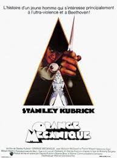
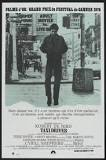

Le parrain (1972)

En 1945, à New York, les Corleone sont une des 5 familles de la mafia. Don Vito Corleone,
'parrain' de cette famille, marie sa fille à un bookmaker. Sollozzo, 'parrain' de la famille
Tattaglia, propose à Don Vito une association dans le trafic de drogue, mais celui-ci refuse.
Sonny, un de ses fils, y est quant à lui favorable.
Afin de traiter avec Sonny, Sollozzo tente de faire tuer Don Vito,
mais celui-ci en réchappe.
Orange Mécanique (1971)

Dans une Angleterre futuriste et inhumaine, un groupe d'adolescents se déchaînent chaque
nuit, frappant et violant d'innocentes victimes. Alex, le leader du gang est arrêté et
condamné à 14 ans de prison. Il accepte de se soumettre à une thérapie de choc destinée à
faire reculer la criminalité.
Taxi Driver (1976)

Travis Bickle, un jeune homme du Midwest et ancien marine, est chauffeur de taxi de nuit à
New York. Insomniaque et solitaire, il rencontre Betsy, une assistante du sénateur Charles
Palantine, candidat à la présidentielle, mais elle le repousse après qu'il l'a emmenée voir
un film pornographique. Confronté à la violence et à la perversion de la nuit new-yorkaise,
il achète des armes au marché noir et s'entraîne à les manier.